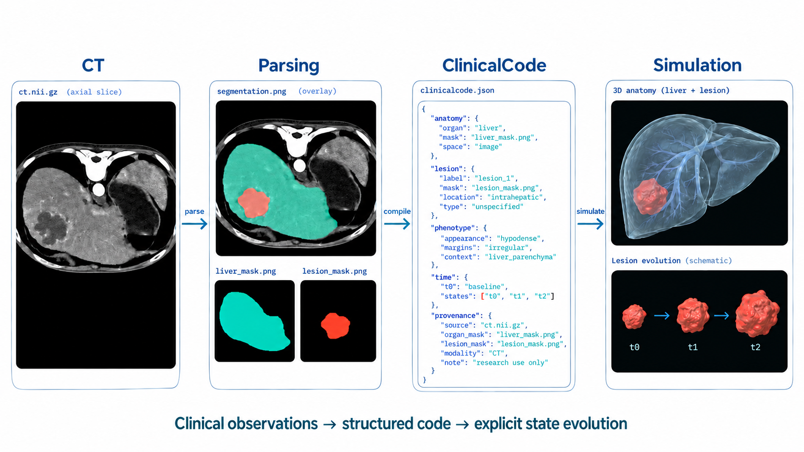
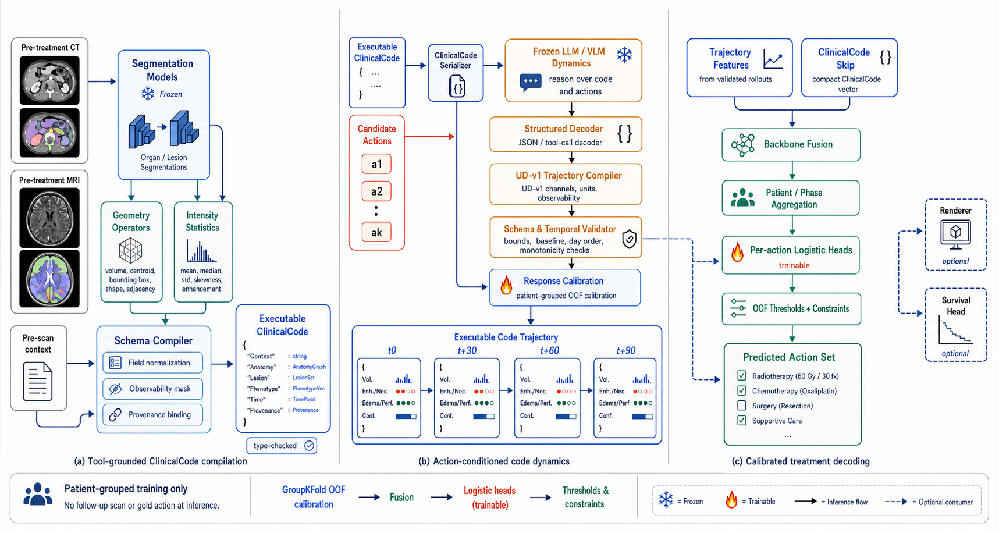

Animating the Clinical Source Code
of Disease Progression for Medical World Models

Overview
Medical world models should describe how disease state evolves under candidate interventions. ClinicalCode uses a typed, executable representation for anatomy, lesions, imaging phenotype, clinical context, time, uncertainty, missingness, and provenance.
Compilers build this state from CT, MRI, and pre-decision observations. An action-conditioned dynamics model rolls the state forward, while validation checks expose inconsistent fields and temporal changes. A calibrated decoder then connects the trajectories to documented treatment actions.
This explicit interface lets researchers inspect individual variables, edit a state, and distinguish errors in perception, state evolution, and treatment decoding. The framework is evaluated across CT treatment planning and longitudinal glioma MRI.
What the representation makes explicit
- A clinical state you can read. Anatomy, lesion geometry, imaging phenotype, and context are represented with explicit types, units, and sources.
- Actions condition the future. Candidate interventions produce separate trajectories over the same shared clinical-state interface.
- Every change has a place. Missing observations, predicted fields, and uncertainty stay visible throughout the rollout.
- Validate before decoding. Schema and temporal checks precede the calibrated mapping from trajectories to documented treatment actions.
Video demonstration
Explore a liver lesion in 4D
Liver lesion · arterial CT
Real baseline anatomyIllustrative state evolution
CT
Parsing
reference masksClinicalCode
state.json{
"anatomy": {
"organ": "liver",
"source": "reference_mask"
},
"lesion": {
"id": "lesion_1",
"baseline_ml": 72.384,
"volume_ml": 63.171, "necrotic_fraction": 0.456, "viability_proxy": 0.582 },
"action": "action_1",
"time_days": 45,
"uncertainty_proxy": 0.160, "provenance": {
"baseline": "CT + masks",
"slice_index": 32,
"dynamics": "illustrative"
}
}Move the time slider or choose an action. State fields and the 3D lesion update together.
Simulation
Illustrative state · day 45Coral: lesion shell · blue-grey: illustrative necrotic core
Baseline surfaces come from the CT reference masks. Future volume, tissue composition, and uncertainty visualize the existing rule-contract states; the interior core is a schematic encoding, not a measured necrosis map or a patient forecast.
The interactive renderer could not start. Watch the video or inspect the example states.
A field is more than a value.
Each state field carries its type and unit, observability, uncertainty, source, and mutability. An unobserved quantity stays missing.
Illustrative schema excerpt. The missing volume is deliberate; this example contains no patient measurements.
// An inspectable field in a ClinicalCode state
{
"lesion.volume": {
"value": null,
"type": "float",
"unit": "mL",
"observability": "missing",
"uncertainty": null,
"source": null,
"mutability": "mutable"
}
}Compile
Ground the clinical state in imaging tools and pre-decision context.
Roll forward
Predict changes to mutable fields for each candidate action.
Validate
Check types, units, bounds, time, and provenance.
Decode
Map validated trajectories to documented treatment actions.

Framework figure from the manuscript. Open the figure to inspect its details.
SomaAtlas anatomical assets
Organs, tissue surfaces and the structures within them. Explore the anatomy in 3D, isolate individual components and download the source models.
 Heart
Chambers, coronary arteries and aortic valve.Explore 14 structures in 3D
Heart
Chambers, coronary arteries and aortic valve.Explore 14 structures in 3D
 Liver & biliary
Liver, gallbladder, bile duct and arteries.Explore 7 structures in 3D
Liver & biliary
Liver, gallbladder, bile duct and arteries.Explore 7 structures in 3D
 Lungs
Five lobes with pleural surface detail.Explore 5 structures in 3D
Lungs
Five lobes with pleural surface detail.Explore 5 structures in 3D
 Kidneys
Paired kidneys with renal capsular detail.Explore 2 structures in 3D
Kidneys
Paired kidneys with renal capsular detail.Explore 2 structures in 3D
 Stomach
Gastric surface with an anatomical cutaway.Explore in 3D
Stomach
Gastric surface with an anatomical cutaway.Explore in 3D
 Pancreas
Lobular surface, from head to tail.Explore in 3D
Pancreas
Lobular surface, from head to tail.Explore in 3D
 Spleen
Splenic capsule and hilar contour.Explore in 3D
Spleen
Splenic capsule and hilar contour.Explore in 3D
 Trachea & bronchi
Trachea and both main bronchi.Explore 3 structures in 3D
Trachea & bronchi
Trachea and both main bronchi.Explore 3 structures in 3D
 Muscles & tendons
Muscle groups, fibers and tendons.Explore 176 structures in 3D
Muscles & tendons
Muscle groups, fibers and tendons.Explore 176 structures in 3D
 Arteries & veins
Major arteries and veins across the body.Explore 2 vessel groups in 3D
Arteries & veins
Major arteries and veins across the body.Explore 2 vessel groups in 3D
Anatomical model
Loading original model…
Separation changes the display positions only.
Loading structures…
Checkbox: show or hide · Isolate: view one structure
Appearance, scope & source
Appearance textures are separate from physical tissue parameters.
Explore SomaAtlas Sources & credits
Interactive viewer unavailable. The original models are available through the links above.
Results
Treatment-action prediction results reported in the manuscript. CT and MRI have separate cohorts and evaluation protocols.
| Method / configuration | Internal F1 ↑ | External F1 ↑ |
|---|
Evaluation context
The tables measure agreement with documented treatment actions. They do not establish causal treatment benefit. The MRI external result uses the official UCSF test partition with no UCSF fitting or calibration. CT single-model and ensemble configurations are listed separately. Interactive demo values are illustrative and do not contribute to these scores.
Citation
@misc{chen2026clinicalcode,
title = {Animating the Clinical Source Code of Disease
Progression for Medical World Models},
author = {Chen, Qi and Yuille, Alan L. and Chen, Jieneng},
year = {2026},
note = {Research manuscript},
url = {https://qic999.github.io/projects/ClinicalCode/}
}